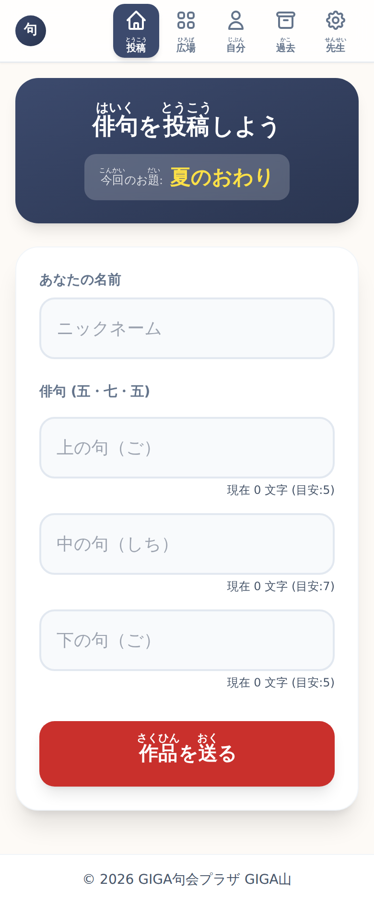
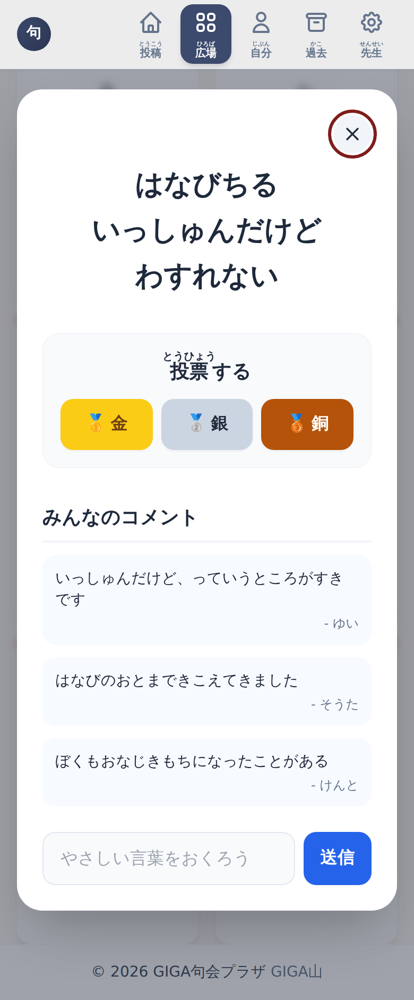
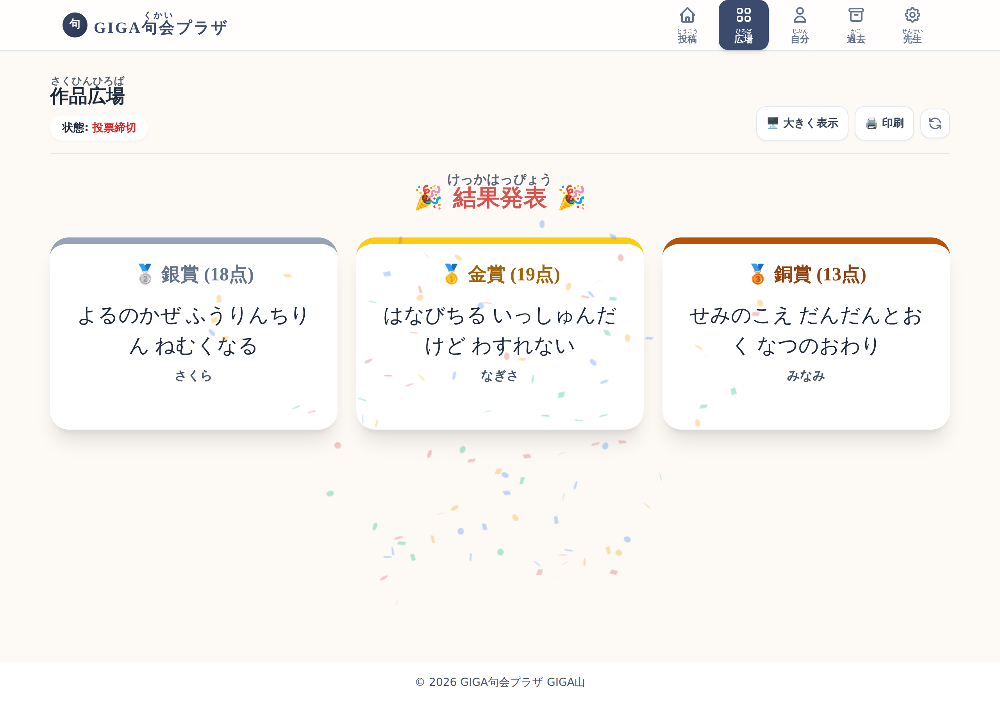

GIGA句会プラザ
クラス全員が俳句を詠んで、読み合って、選んで、結果を発表するまでを、 1つの画面のなかで済ませられるようにした無償のアプリです。小学校の教員が作りました。
このページからは、句会を開けません
このアプリは、先生おひとりずつが、ご自分の Google アカウントで公開して使う形です。 共通の入口はありません。
- 児童のみなさんは、先生から配られた URL を開いてください。このページではありません。
- 先生方は、下の「入れかた」の手順で、ご自分の句会の URL を作ってください。10 分ほどで終わります。
作品の置き場所は、公開した先生ご自身の Google ドライブに自動で作られる表計算ファイルが1つだけです。 制作者を含め、ほかの誰のところにもデータは行きません。
どんなアプリか
短冊を配って、五・七・五を書かせて、集めるところまでは進みます。問題はそのあとです。 時間の都合で読み合えるのは数人ぶんで、残りの子の句は、だれの目にも触れないまま終わってしまう。 集めるところと並べるところを画面にまかせれば、その時間は読み合うほうに戻せます。



使うときの流れ
- 先生がお題を決めて、URL を配ります。
- 子どもたちが名前と三行を入れて送ります。何句でも出せます。
- 広場に並んだ短冊を読み合い、金・銀・銅を1枚ずつ入れます。感想も書けます。
- 先生が投票を締め切ると、結果発表に変わります。電子黒板に大きく映せます。
- 「新しい句会を準備する」を押すと、その回は日付つきで残り、次の回が始まります。
入れかた
スプレッドシートをコピーして、公開の設定をするだけです。 準備するものは Google アカウント1つ。ふだんお使いの学校のアカウントで構いません。 10分ほどで終わります。
- 上のボタンを押し、「コピーを作成」を選びます。ご自分のドライブにファイルができます。
- できたファイルを開き、上の「拡張機能」＞「Apps Script」を開きます。
- 右上の「デプロイ」＞「新しいデプロイ」＞種類は「ウェブアプリ」。 実行するユーザーは「自分」、アクセスできるユーザーは「同一ドメインの全員」をおすすめします。
- 表示された URL を児童に配れば準備完了です。
コードは、コピーしたファイルの中に入っています。 貼り付ける作業はありません。作品もそのファイルの中に入るので、 どこにできたのかを探す必要もありません。
先生用の画面に入る合言葉は、はじめは決まっていません。 いちばん最初に「先生」タブを開いた人がその場で決めます（6文字以上）。 児童に URL を配る前に、先生が先に開いて決めてください。
コピーできないときは、貼り付けでも入ります。
学校のポリシーで、外部のファイルのコピーが禁じられていることがあります。
その場合は、README の「B. ファイルを貼り付ける」
をご覧ください。code.gs と HTML 4つを Apps Script に貼る手順で、
入るものは同じです。
アクセスできるユーザーに「全員（匿名ユーザーを含む）」を選ぶと、 URL を知っていれば校外の人でも投稿・投票・コメントができます。 児童が学校のアカウントを持っていないなどでやむを得ず選ぶ場合は、 句会をする時間だけ公開し、終わったら公開を止めてください。
2通りの入れかたの全文は README、 当日の進め方は 操作マニュアル にあります。作った理由と画面ごとの説明は 紹介記事にまとめました。
情報担当の先生へ
| 項目 | このアプリの場合 |
|---|---|
| フィルタリングで通すもの | アプリ本体が置かれる script.google.com だけです。
見た目のために和風の書体（Google Fonts）とタブの絵を読みますが、どちらも届かなくても動きます。 |
| 画面を作る部品 | 外から読み込みません。必要なものは全部アプリの中に持っています。 校内のフィルタリングで配信元が塞がれても画面は出ます。最初に読み込む量はあわせて 256 キロバイトほどです。 |
| データの置き場所 | 公開した先生ご自身の Google ドライブに自動で作られる表計算ファイル1つだけ。 外部のサービスへは何も送りません。制作者もデータを見られません。 |
| 児童が入れる情報 | ニックネームで足ります。出席番号でも構いません。 入れた名前はその端末に覚えられます。 |
| 先生用の操作 | お題の変更・締め切り・作品を隠す・句会の準備は、合言葉で入ったときだけ。 画面のボタンを隠すのではなく、サーバー側で確かめています。 |
| 費用・アカウント登録 | どちらもありません。MIT ライセンスで公開しています。 |
シートを点検する
コピーしたスプレッドシートを開くと、上のメニューに「GIGA句会プラザ」が出ます。 「シートを点検する」を押すと、中の作りがアプリの想定どおりかを確かめられます。 得点や作者名は列の番号で読み書きしているので、 誤字の修正や行の削除はしていただいて構いませんが、列の並びは変えないでください。
できないこと
正直に書いておきます。結果を CSV などに書き出す機能はありません（表計算ファイルを直接お使いください）。 広場も先生の画面も自動では更新されず、最新の状態はボタンで読み直します。オフラインでは使えません。 だれが投票したかは端末に作られた印で見分けているので、 別の端末や別のブラウザで開き直すと、同じ子がもう一度三票を使えてしまいます。 一人一台で、投票の間は端末を替えないようにしてください。